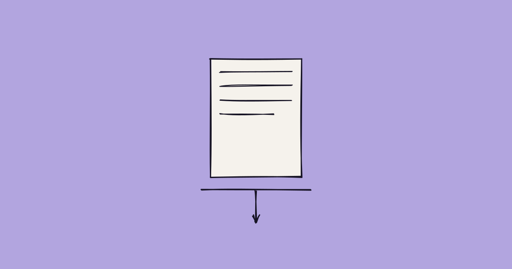

Your Agent Applied. Their Agent Rejected It. No Person Was in the Room Either Time.
Half of talent leaders will deploy autonomous recruiting agents this year. Candidates are deploying their own. Nobody is checking either one’s work.

For most of the last three years, "AI in hiring" meant a person using a tool. A candidate asking ChatGPT to reword a resume. A recruiter running an applicant tracking system that ranks incoming applications by keyword match. A human still made every decision; the AI just did the drafting or the sorting underneath them.
That arrangement is ending, on both sides at once, and it's ending fast enough that most of the industry commentary hasn't caught up to what "agentic" actually means once it's deployed at scale. An agent isn't a tool a person operates. It's a system given a goal — find roles that fit this profile, screen this pipeline down to a shortlist — that then plans and executes a multi-step sequence on its own, without a human approving each step along the way. In 2026, that description now applies to a meaningful share of both sides of the hiring funnel simultaneously. The candidate's agent finds the posting, tailors the materials, and submits — without the candidate reading the job description first. The employer's agent receives it, scores it, and moves it forward or discards it — without a recruiter reading the resume first. Two autonomous processes, transacting with each other, checked by neither party until whatever step downstream still requires a human signature.
What the candidate-side agent actually does now
CareerBoom's July 17 launch is a useful marker because it's explicit about what it replaces. The company's Auto Discover technology scans more than five million newly posted jobs a month, matches them against a candidate's stated profile, tailors an application to each one, and submits it — the entire sequence, from discovery to submission, running without the candidate reviewing the individual posting or the individual application that goes out under their name. CareerBoom says more than 50,000 applications have already gone through the system this way. It isn't alone: LoopCV markets itself around applying to "1,000+ jobs automatically," LazyApply runs the same category of service, and a growing shelf of "background agents" — tools that work between a candidate's sessions, not during them — have turned job search from something a person does into something a person supervises loosely from a distance.
The platforms these agents operate on have started pushing back, which tells you the volume is real. LinkedIn's Easy Apply throttles automated behavior at roughly 30 applications a day before its systems intervene, and pushing meaningfully past 50 risks a temporary restriction. The company's March 2026 Transparency Report disclosed that it blocked 78.2 million fake accounts and flagged 23.5 million automated sessions in a single quarter, and it terminated its integration with the automation tool HeyReach that same month. None of that has slowed adoption. It's slowed down the specific vendors LinkedIn catches, which is a different thing, and the category keeps growing underneath the enforcement.
The employer side built the exact same thing
It would be a much smaller story if the automation only ran on the applicant's side. It doesn't. Korn Ferry's 2026 research puts the number at 52% of talent leaders planning to deploy autonomous agents this year, and separate industry tracking finds 42% have already deployed some form of agentic recruiting system with 82% planning to, which is less a projection than a description of where the rollout already stands. The AI-in-HR market itself has been valued above $2 billion in 2026 on the strength of exactly this shift.
What these systems do is the mirror image of the candidate-side tools. Given a role, an employer-side agent sources candidates across a database, screens the incoming applications, scores them against the role's criteria, drafts and sends outreach, and books interviews — a full sequence, chained together, running under a recruiter's general direction rather than their step-by-step approval. The industry's own framing of the shift is candid about what this does to the recruiter's job: less the person who runs every search and sends every message, more the person who directs a set of agents and reviews their output after the fact, if at all before the next batch runs.
Put both halves next to each other and the picture is not "AI helps people hire" or "AI helps people get hired." It's two independent automated systems, deployed by two parties who don't fully trust each other, negotiating the earliest and highest-volume stages of a hiring process without either side's human present for the negotiation. The application that gets tailored and submitted by an agent is being read, in a meaningful share of cases, by another agent on the other end — and the first human to look at anything might not appear until three or four steps into a process that used to start with a person reading a resume.
The retreat that's already underway
The industry's response to this is not, on the whole, "build better agents to keep up." It's the opposite. It's leaving the digital process altogether.
A Gartner survey found that 72.4% of recruiting leaders are now conducting interviews in person specifically to counter what automation has done to the reliability of remote screening, and 39% describe this as a direct, deliberate countermeasure rather than incidental preference. Requests for in-person interviews at major recruitment firms have gone from roughly 5% of processes in 2024 to about 30% in 2025 — a fivefold jump in a single year. Google, Cisco, and McKinsey are among the companies that have pulled parts of their hiring process back into a room, on the explicit logic that a screen mediated by two sets of agents has stopped producing information either side can act on.
This is the tell. Nobody retreats to a slower, more expensive process because the faster one is working too well. Recruiting leaders who spent the last three years building automated pipelines are now spending 2026 rebuilding the in-person step those pipelines were supposed to make unnecessary — not because they dislike efficiency, but because efficiency between two automated systems that don't trust each other isn't efficiency. It's two black boxes exchanging outputs neither side can verify, at a speed that makes the eventual correction more expensive, not less. And on the candidate side, the distrust runs just as deep in the other direction: separate 2026 survey data finds 71% of candidates oppose AI making the final call on their application at all, and a meaningful share say they wouldn't apply to a company that leans on AI in hiring in the first place — even as, functionally, a rising share of those same candidates are handing their own applications to an agent to submit unsupervised.
Both sides, in other words, have built automation they don't fully trust the other side's version of, and the shared response has been to walk the highest-stakes moments back to the one channel neither an application-writing agent nor a screening agent can fully reach: a person, in a room, answering a question they didn't see coming.
The thing neither agent can fake
The retreat to in-person interviews works, as far as it goes, but it's a patch on the same problem that's shown up in every previous round of this arms race — it adds a checkpoint after the volume has already been generated, rather than changing what the volume is made of. An agent that tailors a resume against a job description and an agent that scores a resume against the same job description are optimizing against each other, not against the thing either party actually needs to know: whether this specific person did this specific work, at this specific employer, with an outcome that held up.
That's the one input neither side's agent can manufacture at scale, because it isn't a writing task or a scoring task. It's a record. A candidate-side agent can generate a flawless application in nine seconds. It cannot generate a verified two-year track record of shipping a metric that moved. An employer-side agent can score ten thousand of those applications overnight. It cannot verify which ten of them are describing something that actually happened without a source outside the document itself. The arms race between the two agents will keep escalating exactly as long as the input they're both fighting over is a document — because a document is infinitely reproducible, and a trajectory isn't.
AgentR evaluates candidates against a verified trajectory — the specific work, at the specific employer, with a specific measurable outcome — instead of a document or a live performance that either side's agent can now generate on demand. When your applicant pipeline and your candidates' job search are both being run by autonomous systems that have never met, the fix isn't a better agent for your side of the negotiation. It's a signal neither agent can fabricate. Let's talk.